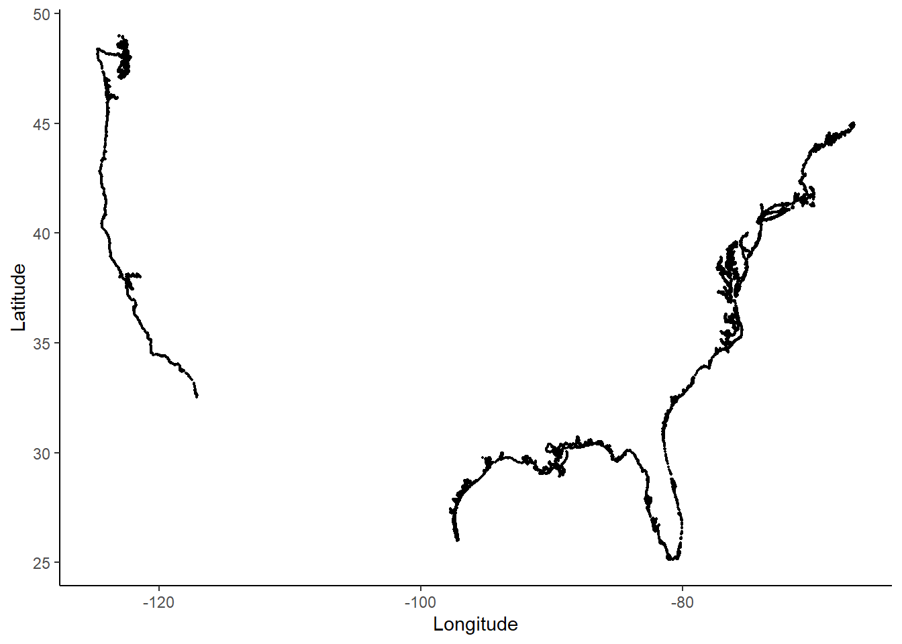
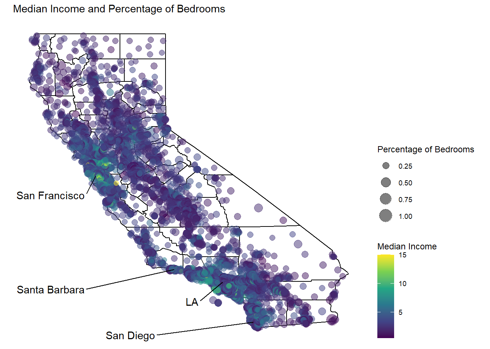

Data Analytics 310 Machine Learning Project
California Housing Prices
Michelle Gagliardo and Andrew Mosbo
Motivation
The value of a house can be determined by a number of different factors, which includes: location, size, age and condition, income, and neighboring houses. When deciding on where to live, a buyer not only considers the house value but also the other different attributes of the house. For example, cities like San Francisco that are highly developed and don’t have much room to expand tend to have higher prices than cities with too much room to expand. Naturally, certain attributes will contribute to a higher house value. If a house is close to essential amenities such as grocery stores, shops, and restaurants, this will contribute to a higher house value. Furthermore, newer electrical and plumbing systems might also raise the value of a house.
Using data from the 1990 California Consensus and data from Coast Borders of the Continental United States, we wanted to model how Median House Value is affected by certain house attributes. Since California is known for its many coastal cities, we wanted to include “Distance to Coast” as an additional attribute. Also, since larger houses tend to have more bedrooms, we wanted to create a percentage variable that looked at the amount of Total Bedrooms in relation to the amount of Total Rooms.
Research Question
In what ways do the attributes of a house affect the sales price of a house in California?
Statistical Hypothesis : Distance to the Coast, Population, and Income all affect house prices.
Data
Distance : Closest distance to the coast(measured in miles)
housingMedianAge : Median age of a house within a “block”; a lower number is a newer building
totalRooms: Total number of rooms within a “block”
totalBedrooms: Total number of bedrooms within a “block”
population : Total number of people residing within a “block”
households : Total number of households, a group of people residing within a home unit, for a “block”
medianIncome : Median income for households within a “block” of houses (measured in tens of thousands of US Dollars)
medianHouseValue : Median House Value for households within a “block”(measured in US Dollars)
perc_br : totalBedrooms/totalRooms
Approach
Using data from Coast Borders of the Continental United States, we created a new “Distance to the Coast” variable.

Here, we have a table of summary statistics for each of our variables within the California Housing Value data set.
| skim_variable | numeric.mean | numeric.sd | numeric.p0 | numeric.p25 | numeric.p50 | numeric.p75 | numeric.p100 | numeric.hist |
|---|---|---|---|---|---|---|---|---|
| longitude | -1.195697e+02 | 2.003532e+00 | -1.2435e+02 | -1.218000e+02 | -1.184900e+02 | -1.180100e+02 | -114.3100 | ▂▆▃▇▁ |
| latitude | 3.563186e+01 | 2.135952e+00 | 3.2540e+01 | 3.393000e+01 | 3.426000e+01 | 3.771000e+01 | 41.9500 | ▇▁▅▂▁ |
| housingMedianAge | 2.863949e+01 | 1.258556e+01 | 1.0000e+00 | 1.800000e+01 | 2.900000e+01 | 3.700000e+01 | 52.0000 | ▃▇▇▇▅ |
| totalRooms | 2.635763e+03 | 2.181615e+03 | 2.0000e+00 | 1.447750e+03 | 2.127000e+03 | 3.148000e+03 | 39320.0000 | ▇▁▁▁▁ |
| totalBedrooms | 5.378980e+02 | 4.212479e+02 | 1.0000e+00 | 2.950000e+02 | 4.350000e+02 | 6.470000e+02 | 6445.0000 | ▇▁▁▁▁ |
| population | 1.425477e+03 | 1.132462e+03 | 3.0000e+00 | 7.870000e+02 | 1.166000e+03 | 1.725000e+03 | 35682.0000 | ▇▁▁▁▁ |
| households | 4.995397e+02 | 3.823298e+02 | 1.0000e+00 | 2.800000e+02 | 4.090000e+02 | 6.050000e+02 | 6082.0000 | ▇▁▁▁▁ |
| medianIncome | 3.870671e+00 | 1.899822e+00 | 4.9990e-01 | 2.563400e+00 | 3.534800e+00 | 4.743250e+00 | 15.0001 | ▇▇▁▁▁ |
| medianHouseValue | 2.068558e+05 | 1.153956e+05 | 1.4999e+04 | 1.196000e+05 | 1.797000e+05 | 2.647250e+05 | 500001.0000 | ▅▇▅▂▂ |
| Distance | 2.421828e+01 | 3.097077e+01 | 1.7774e-02 | 4.211575e+00 | 1.160305e+01 | 3.012989e+01 | 218.4472 | ▇▁▁▁▁ |
| perc_br | 2.130745e-01 | 5.802350e-02 | 1.0000e-01 | 1.754255e-01 | 2.031807e-01 | 2.398345e-01 | 1.0000 | ▇▁▁▁▁ |
We have provided a Correlation Heat Map of each the variables.
We visualized the relationships between two variables on a map of California. As expected, locations close to the coast tend to have higher median house values and higher median incomes compared to more inland areas. The percentage of bedrooms doesn’t seem to be related to distance to the coast.


Also, from a simple graph, we can see that there seems to be a negative correlation between Median House Value and Distance. That is, as distance to the coast increases, the Median House Value tends to decrease.
Here, we have an interactive graph that shows the relationship between Distance to the Coast and a given attribute.
Shiny Graph goes here :
Linear Regression Model
We tested many different models, and had adjusted R.squared values ranging from 0.2 to 0.6. We settled on one model, which included all attributes found in the data set. We have provided a table of the four models that we considered.
\[medianHouseValue = \beta_{0} + Distance * \beta_{1} + medianIncome * \beta_{2} + population * \beta_{3} + households * \beta_{4} + perc_br *\beta_{5} \]
| Dependent variable: | ||||
| medianHouseValue | ||||
| (1) | (2) | (3) | (4) | |
| Distance | -914.680*** | -1,208.841*** | -1,168.605*** | -1,140.064*** |
| (31.279) | (31.194) | (29.661) | (30.880) | |
| medianIncome | 43,749.860*** | 36,571.690*** | 36,474.330*** | 39,048.580*** |
| (641.946) | (520.718) | (493.876) | (618.272) | |
| population | -51.363*** | -55.808*** | -50.000*** | |
| (2.093) | (2.150) | (2.277) | ||
| households | 155.963*** | 159.335*** | 104.459*** | |
| (5.973) | (6.116) | (13.915) | ||
| perc_br | 283,624.800*** | |||
| (20,189.710) | ||||
| housingMedianAge | 1,105.245*** | |||
| (76.971) | ||||
| totalBedrooms | 82.443*** | |||
| (12.557) | ||||
| totalRooms | -9.475*** | |||
| (1.447) | ||||
| Constant | -37,527.690*** | 94,658.390*** | 93,603.770*** | 82,786.840*** |
| (7,219.005) | (2,498.292) | (2,663.822) | (3,127.239) | |
| Observations | 6,278 | 6,278 | 6,278 | 6,278 |
| R2 | 0.637 | 0.569 | 0.613 | 0.616 |
| Adjusted R2 | 0.637 | 0.569 | 0.613 | 0.616 |
| Residual Std. Error | 68,650.350 (df = 6271) | 74,759.340 (df = 6275) | 70,900.320 (df = 6273) | 70,594.160 (df = 6271) |
| F Statistic | 1,835.611*** (df = 6; 6271) | 4,150.117*** (df = 2; 6275) | 2,483.010*** (df = 4; 6273) | 1,679.150*** (df = 6; 6271) |
| Note: | p<0.1; p<0.05; p<0.01 | |||
Explain table here:
Residual Plot
Through our tests, with each linear regression model, the plot of the residuals did not change much. So, we have provided the residual plot of the final model below. It is worth noting that there is a downward linear trend. With the information we had, we could not determine why this trend is there. But the residual plot tells us that although there was some error, this is an acceptable model of the data.

Results
Our final model had some issues but no model will be a perfect representation of the real-world situation. There are many factors related to the housing market in California, more than we could account for. Nonetheless, we still managed to get a decent Adjusted R-squared value from our final model. Furthermore, with each linear regression model, the plot of the residuals did not change much.
Regarding our Research Question, we found that each attribute had a different effect on the Median House Value. Regarding our Statistical Hypothesis, Distance and medianIncome proved to be significant attributes. However, population did not prove to be as significant as we expected.